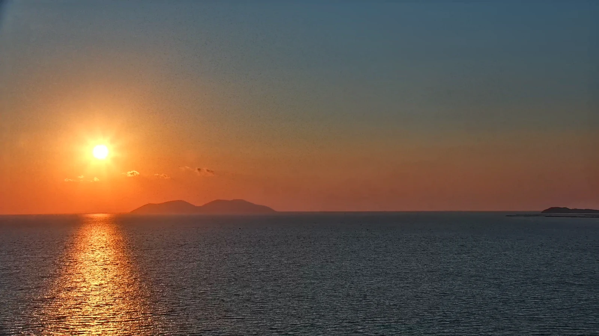
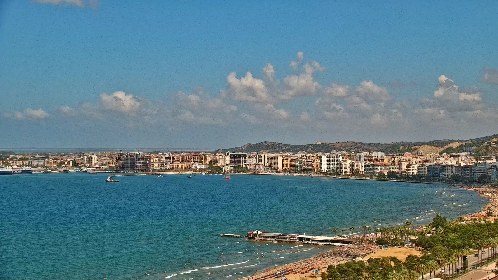
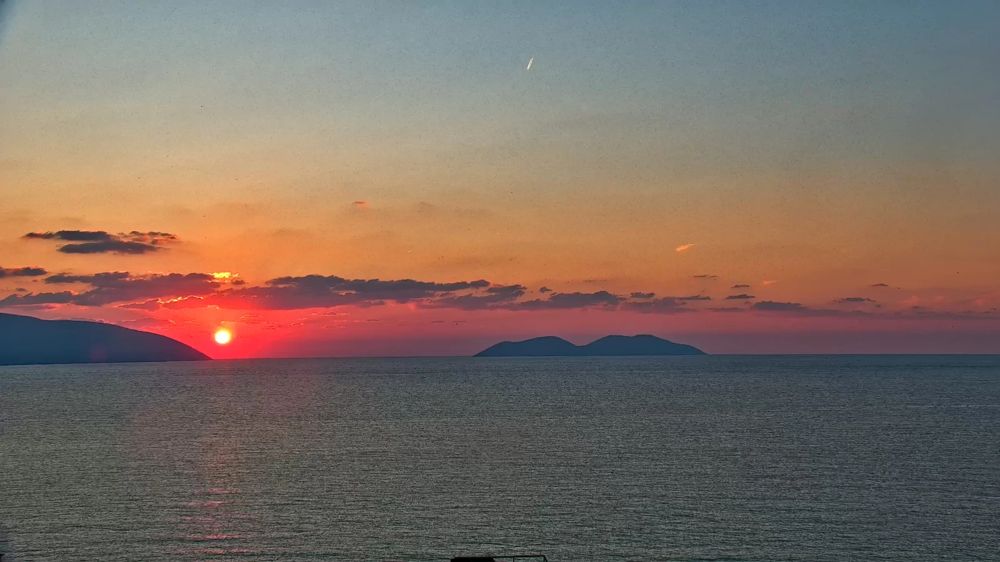
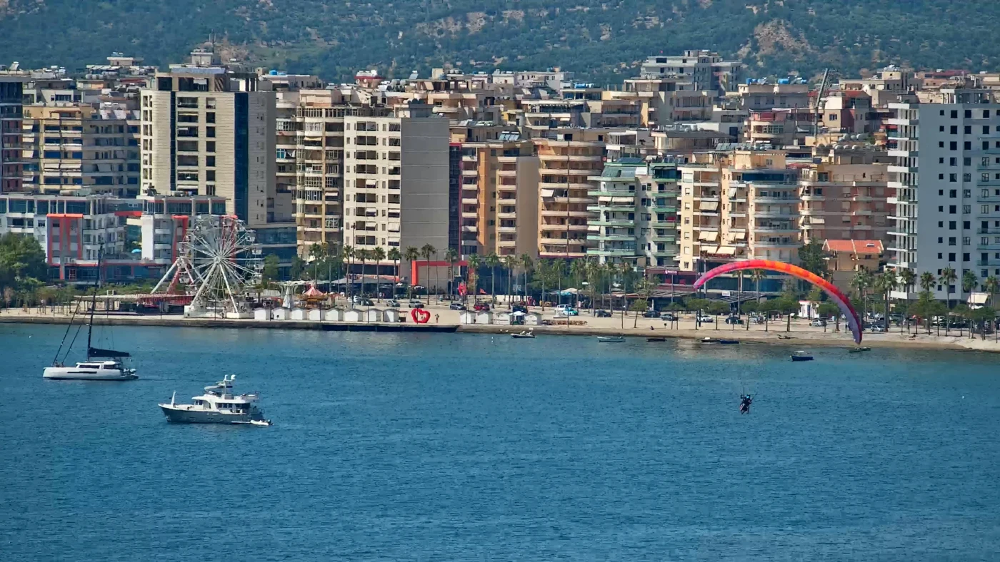
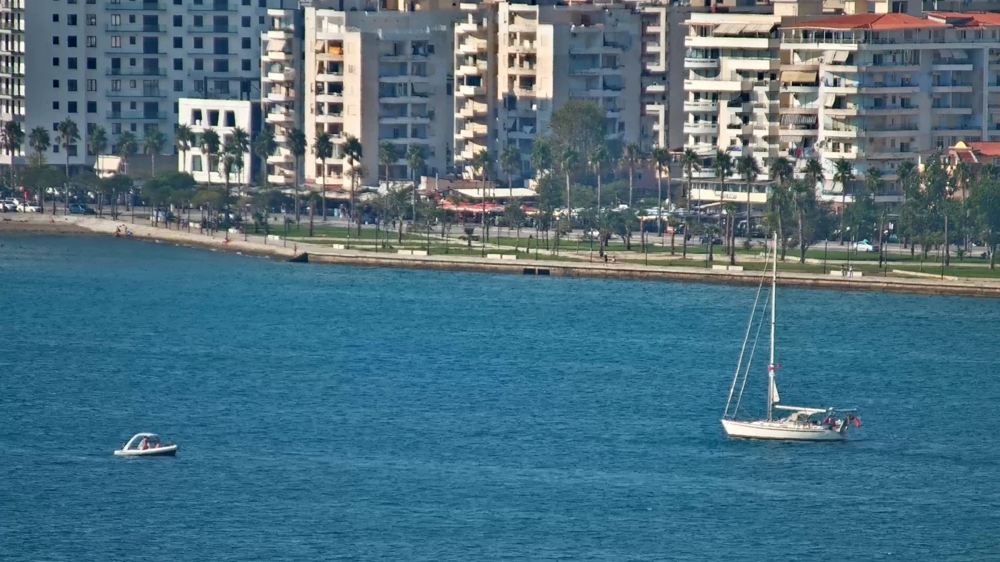
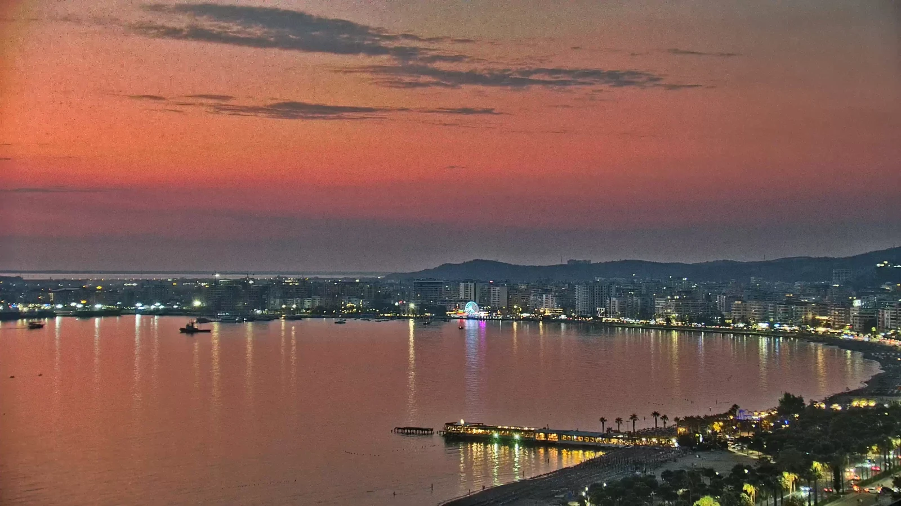
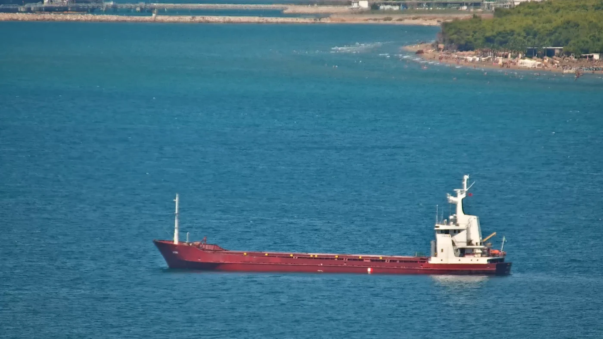
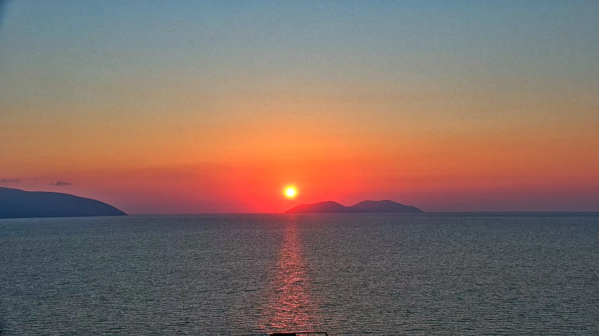

Golden hour
Warm light across Sazan, Karaburun and the open Adriatic.

The preview updates automatically. The full stream runs continuously on YouTube in 4K, with the camera moving through the strongest views around the bay.
Open live stream ↗Real views captured from the Vlora LIVE camera — no stock photography.





Vlora LIVE is not a fixed webcam. The PTZ camera moves through the landscape, following the changing light, sea activity and the scenes that make the bay worth watching.

Warm light across Sazan, Karaburun and the open Adriatic.

Ferries, cargo ships, yachts, sailing boats and small craft moving through the bay.

The horizon changes constantly — and some evenings are exceptional.
A natural fit for hospitality, tourism, travel, property and local businesses that want visibility with an audience already interested in the destination.
Ask for current audience information and partnership options.
Contact Vlora LIVEYes. The camera streams continuously from Vlora, Albania. The full 4K stream is available on YouTube.
Vlora Bay, Lungomare, Sazan Island, Karaburun, the port, ferries, yachts, beaches, paragliders and the changing Adriatic weather and light.
It overlooks Vlora Bay near Lungomare. The precise camera position is not published for privacy.